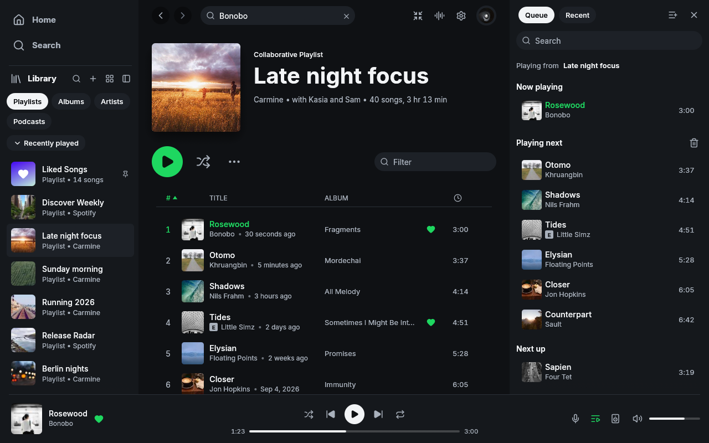

Queue search joins the existing inspector. Play Next, Play Later, selection, edge moves, clipboard controls and bounded Undo/Redo reuse existing menus and keyboard conventions. Application chrome and themes remain unchanged.
Windows x64 native captures with identical offline playing-next fixtures, dark/light themes and narrow/wide windows. Before: functional upstream candidate 66b4ae2. After: queue extraction 71fa388 plus validated catalogue/test corrections. Screenshots show the added search field; automated rendered tests cover menus, selection and keyboard behavior. Minor pointer hover and transient scrollbar differences are capture artifacts. Authenticated playback is not tested here.
